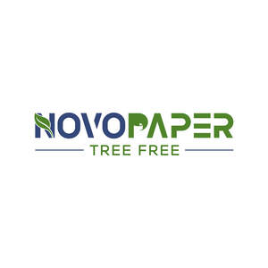

Trade Mark Journal No.2025/024 13 June 2025
UK00004210564 28 May 2025 (16)

- Class 16
- Paper; Newsprint paper; Stencil paper [mimeograph paper]; Paper stock [printing paper]; Paper and cardboard; Kraft paper; Parchment paper; Vellum paper; Napkin paper; Tissue paper for making stencil paper; Paraffined paper [waxed paper]; Notebook paper; Greaseproof paper; Paper stationery; Photocopy paper; Paper napkins; Napkins of paper; Toilet paper; Glassine paper; Printing paper; Paper towels; Towels of paper; Tissue paper for use as material of stencil paper (ganpishi); Stencil paper; Paper doilies; Mimeograph paper; Crepe paper; Cloth paper; Carbonless paper; Publication paper; Blotting paper; Envelope paper; Letterhead paper; Typewriter paper; Paper for photocopies; Tissue paper; Wrapping paper; Corrugated paper; Serviettes of paper; Paper serviettes; Laminated paper; Writing paper; Paper made from paper mulberry (tengujosi); Binder paper; Paper ribbon; Postcard paper; Recycled paper; Xerographic paper; Letter paper; Paper handtowels; Paper made from paper mulberry (kohzo-gami); Paper staplers; Staplers for paper; Paper sheets [stationery]; Tablecloths of paper; Paper tablecloths; Calligraphy paper; Giftwrapping paper; Paper bags; Bags of paper; Paper ribbons; Ribbons (Paper -); Ribbons of paper; Tracing paper; Manila paper; Magazine paper; Wax paper; Graph paper; Rice paper; Waxed paper; Paper (Waxed -); Gummed paper; Paper hand-towels; Paper for photocopying; Calendered paper; Paper boxes; Boxes of paper; Drawing paper; Paper handkerchiefs; Handkerchiefs of paper; Gift-wrapping paper; Coated paper; Supercalendered printing paper; Paper garlands; Paper tapes; Absorbent paper; Tablemats of paper; Craft paper; Note paper; Oiled paper for paper umbrellas (kasa-gami); Paper lace; Paper bunting; Bunting [paper]; Bunting of paper; Adhesive paper; Ivory paper; Paper board; Paper washcloths; Paper cuttings; Pads of paper; Paper pads; Art paper; Proofing paper; Mulch paper; Book-cover paper; Paper tissues; Tissues of paper; Bulk paper; Labels of paper; Paper labels; Paper patterns; Carbon paper; Masking paper; Baking paper; Paper for wrapping books; Paper book markers; Paper clips; Honeycomb paper; Rosettes of paper; Placards of paper; Semi-processed paper; Lavatory paper; Paper hangtags; Packing paper; Paper cutters; Grocery paper.
Novorise Limited